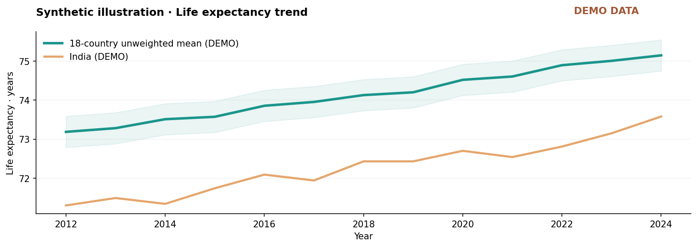
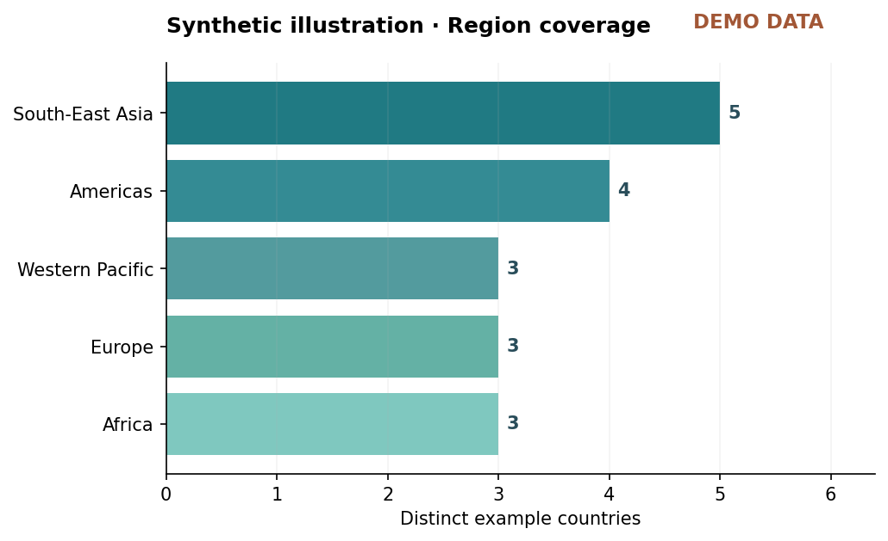

From open data to usable insight.
Designed and implemented by Kavali Harshavardhan. The application combines a documented aggregate-health data pipeline with an API, dashboard, forecasting prototype, anomaly review and reproducibility-focused testing.
Built beyond a dashboard
End-to-end implementation with meaningful safeguards that separate observations, illustrative projections and unverified resource-density signals.
Clean data foundation
WHO GHO OData adapter, schema validation, bounded ingestion, SQLite provenance and reproducible synthetic test records.
Time-series intelligence
Ridge model with chronological holdout, a naive baseline and robust change anomaly flags. Clearly marked as illustrative.
Research-friendly UX
Interactive React exploration, country and indicator comparison, responsive layouts, coverage notes and CSV export.
Explore the analytics
Original visual examples generated from the bundled synthetic dataset for this project.


Technical stack
Read the complete project
Explore the source, architecture, method documentation, and setup guide inside the packaged repository.